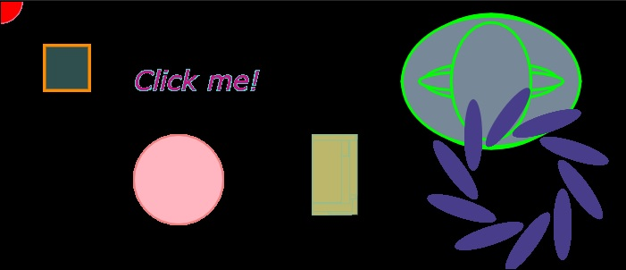

Some of the things I've been working on.
My very first project was a selfie raster.
I decided to use this picture, along with a
picture of a forest sunset. I chose this picture
smipling because it was the only picture of me
with out a filter already applied. The background
of the forset was because I love the view of nature.
This project brought me lots of nostalgia. When
I was about 14, back in 2007, I first started
using Photoshop. I was editing pictures of my
favorite band for a blog page, and I did this until
I was probably 16, maybe 17. Totally an amateur
thing but it was definitely fun for me. Coming
back to Photoshop was totally a challenage because
I left like I forgot everything. This however was
definitely fun.
My second project was a vector project. We had the
option of doing this or with a picture of ourselves
I decided on this. I wanted to play around with the
shapes and see what I could create.
This is my unfinished GIF project. The idea to this
was to kind of to turn the night view of the city
into a bright, colorful, and animated view.
This is my audio porject. This one was a little
harder for me just because I based it on my everyday
life. I decided to record my morning routine from
waking up, to me heading to work, to what I do
everyday at work. The hardest part for me was
remembering to actually record. I will admit, I skipped
a chunk of my job, simpling because I work breakfast
and unfortunately during this time it was our slow
season so no fun action. The action starts during
lunch when I have to host. However I was able to capture
a preshift conversation between my co-workers and I.
During this time we usually joke around as much as
possible before we get hit with our lunch rush. Usually
after that time I am speaking to customers constantly
and walking all over the resturtant seating everyone
and just helping out.
CLick the play button

My very last project that I worked on for the semester. Please click the picture to see my final project
{kind=link}
{kind=link}
{kind=link}